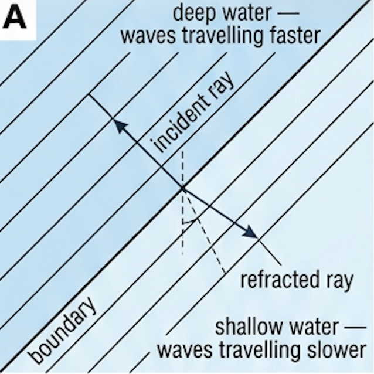
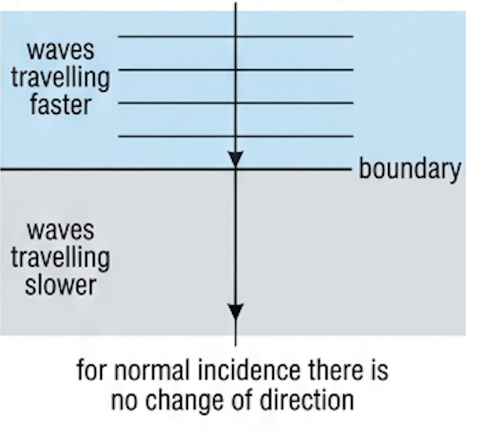
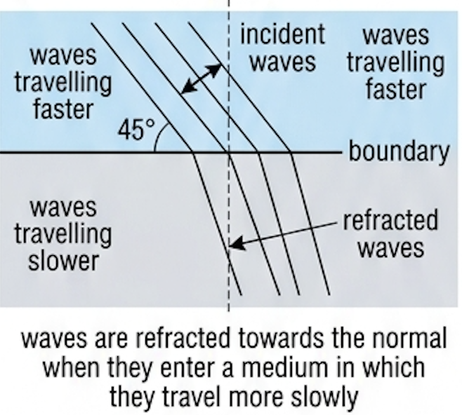
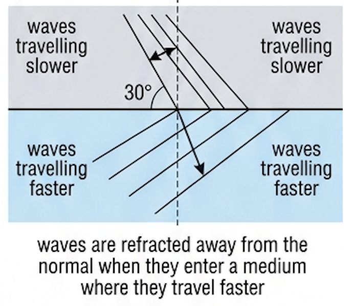
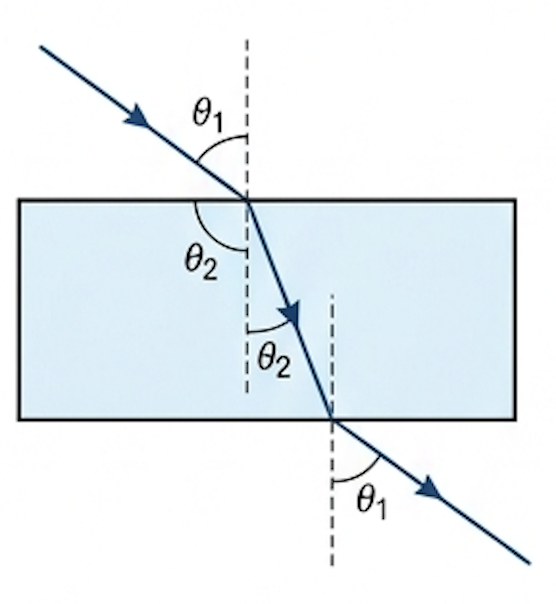
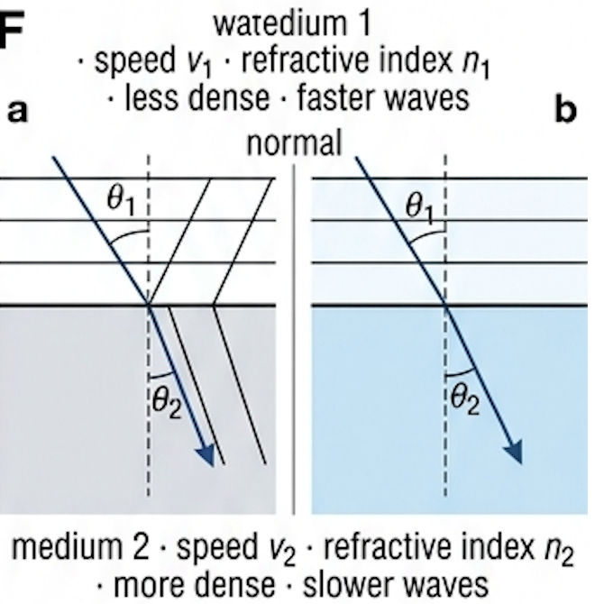
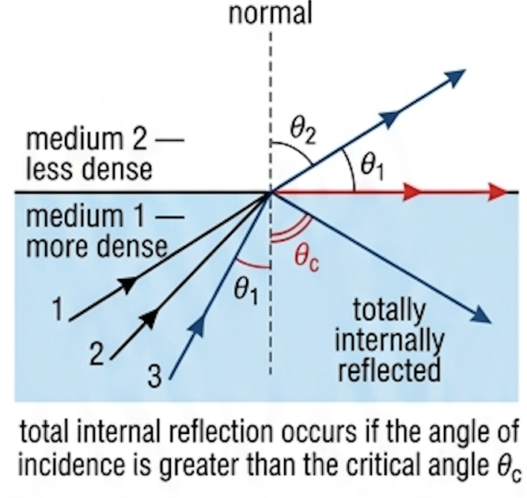
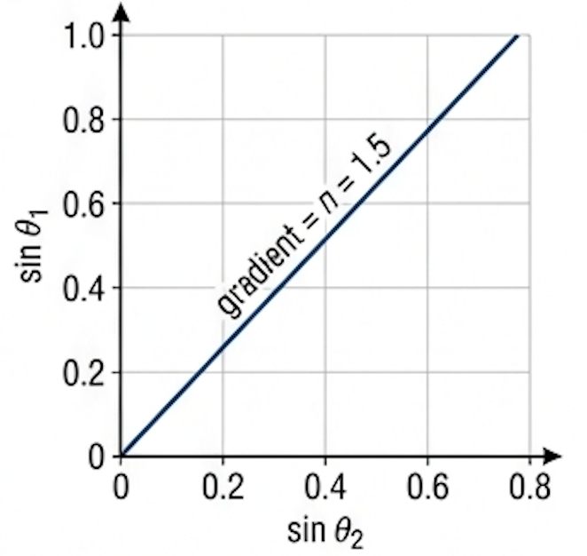
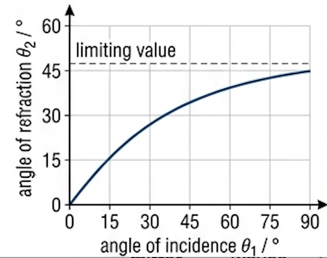
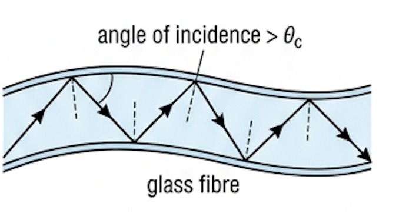

🎯 Hook – why the sea always arrives parallel to the beach
Watch waves approach a beach at an angle. However crooked their line starts out, by the time they break they are almost parallel to the shore. Nothing steers them: the speed of waves on the surface of water generally decreases as they move into shallower water, and the shallow end of each wavefront falls behind. The wave pivots. That bending is refraction.

📐 Refraction: change of speed, change of direction
Waves will usually change speed when they travel into a different medium, and such changes of speed may result in a change of direction.
Case 1 — normal incidence. If the wavefronts are parallel to the boundary, the ray representing the wave motion is perpendicular to the boundary. There is then no change of direction, but because the waves travel more slowly their wavelength decreases while their frequency is unchanged.

Case 2 — oblique incidence. If the wavefronts are not parallel to the boundary, different parts of the same wavefront reach the boundary at different times and consequently change speed at different times. The result is a change of direction — refraction. The greater the change of speed, the greater the change of direction.


The refraction of light is a familiar topic in physics, especially in optics work on lenses and prisms, but all waves tend to refract when their speed changes. Often the change is sudden at a boundary between media, but it can also be gradual or irregular: differences in gas density produce irregular refraction and a blurred image above a fire, and stars twinkle in the night sky because of refraction in a shifting atmosphere.
🔢 Refractive index
The amount of refraction that occurs when a light wave passes from one medium into another depends on the change of speed involved. This is represented numerically by the refractive index, \(n\), of a medium.
That is, the speed of light in vacuum divided by the speed of light in the medium. Refractive index is a ratio of speeds, so it has no unit. For water, the speed of light is \(2.26 \times 10^8\ \text{m s}^{-1}\), so:
In practice we are not usually concerned with light travelling into or out of a vacuum, but the speed of light in air is almost identical to the speed in a vacuum. This means the same refractive indices can be used for light passing from air into, or out of, a medium.
| Medium | Speed of light / 10⁸ m s⁻¹ | Refractive index |
|---|---|---|
| diamond | 1.2 | 2.4 |
| glass | 1.8–2.0 | 1.5–1.7 |
| plastic | 1.9–2.3 | 1.3–1.6 |
| lens in human eye | 2.1 | 1.4 |
| pure water | 2.26 | 1.3 |
| air | 2.997 | 1.0 |
| vacuum | 2.998 | – |
Waves from all parts of the electromagnetic spectrum travel at exactly the same speed (\(c = 3.00 \times 10^8\ \text{m s}^{-1}\)) in free space, but they all travel slower in other media. There are also very small differences in wave speed within the same medium — for example yellow light travels very slightly faster than green light in glass. For many applications this is unimportant, but it results in the dispersion of white light into a spectrum.
📏 Snell's law
When we observe the refraction of light, the only direct measurements that can be made are of the angles involved. In the standard experiment with a parallel-sided glass or plastic block, two measurements are possible: \(\theta_1\), the angle the incident ray makes with the normal, and \(\theta_2\), the angle the refracted ray makes with the normal.
The rays are refracted towards the normal because the speed of light in glass is less than in air. Because the block is parallel-sided, the same angles occur again as the ray emerges. A ray entering the lower surface follows exactly the same path as a ray entering the upper surface, but in the opposite direction. Some of the incident light is also reflected off the glass surface, although this is not drawn.

The Dutch scientist Willebrord Snellius was the first to show how the angles are related to the wave speeds and the refractive indices, as light passes from a medium of refractive index \(n_1\), where its speed is \(v_1\), into a medium of refractive index \(n_2\), where the speed is \(v_2\).
If medium 1 is air, this reduces to a form worth knowing by heart: for light entering from air, the refractive index is the sine of the angle of incidence divided by the sine of the angle of refraction.

🔒 Critical angle and total internal reflection
Consider again a ray entering an optically less dense medium — one in which light travels faster. As the angle of incidence is gradually increased, the refracted ray gets closer and closer to the boundary. At a certain angle the refracted ray emerges at exactly 90°, running along the boundary. That angle of incidence is the critical angle, \(\theta_{\text{c}}\).
For any angle of incidence some light is reflected at the boundary, but for angles of incidence greater than the critical angle all the light is reflected back and remains in the denser medium. This is total internal reflection.

Starting from Snell's law with \(\theta_1 = \theta_{\text{c}}\) and \(\theta_2 = 90^\circ\), so that \(\sin\theta_2 = 1\):
Most commonly the light passes from an optically denser material (medium 1) such as glass, plastic or water into air (medium 2), where \(n_2 = n_{\text{air}} = 1\):
📈 Graphs every examiner uses
| Graph type | Axes (X, Y) | Shape | What to read |
|---|---|---|---|
| Snell's law plot | X: sin θ₂ · Y: sin θ₁ | Straight line through the origin | Gradient \(= n_2/n_1\); with air as medium 1, gradient = refractive index of the block |
| Angle plot | X: θ₁ / ° · Y: θ₂ / ° | Curve through the origin, gradient falling — flattens towards \(\theta_{\text{c}}\)'s partner value | Not a straight line, so never take a "gradient = n" from it; read pairs of angles only |
| Speed vs refractive index | X: n · Y: v / 10⁸ m s⁻¹ | Falling curve (\(v = c/n\), a reciprocal) | Product \(nv = c\) at every point; use it to check a value from Table C3.2 |


✍️ Worked example C3.1 – refractive index of a plastic block
The angle of incidence on a plastic block was 48°, and the angle of refraction was 32°. (a) Determine the refractive index of the plastic. (b) Calculate the speed of light in the plastic.
\(\sin 48^\circ = 0.743\)
\(\sin 32^\circ = 0.530\)
\(= \dfrac{0.743}{0.530} = 1.40\)
then \(1.40 = \dfrac{3.00 \times 10^8}{v}\)
\(v_{\text{plastic}} = 2.14 \times 10^8\ \text{m s}^{-1}\)
Slower than in air, which is why the ray bent towards the normal.
✍️ Worked example C3.2 – water into glass
A light ray travelling in water of refractive index 1.33 is incident upon a plane glass surface at an angle of 27° to the normal. Calculate the angle of refraction if the glass has a refractive index of 1.63.
\(\theta_1 = 27^\circ\), \(\sin 27^\circ = 0.454\)
\(\dfrac{1.33}{1.63} = \dfrac{\sin\theta_2}{\sin 27^\circ}\)
\(\sin\theta_2 = 0.3704\)
Smaller than 27°, as expected: glass is optically denser than water, so the ray bends towards the normal.
✍️ Worked example C3.3 – two critical angles
(a) Determine the critical angle for a water/air boundary (\(n_{\text{water}} = 1.33\)). (b) Determine the critical angle for a glass/water boundary (\(n_{\text{glass}} = 1.60\)).
(b) \(n_{\text{glass}} = 1.60\), \(n_{\text{water}} = 1.33\)
(b) \(\dfrac{1.60}{1.33} = \dfrac{1}{\sin\theta_{\text{c}}}\)
(b) \(\theta_{\text{c}} = 56.2^\circ\)
The closer the two refractive indices, the larger the critical angle.
🌍 Real-world: optical fibres and endoscopes
One very important application of total internal reflection is digital communication. Light passing into a glass fibre can be 'trapped' within the fibre by multiple internal reflections, so it travels long distances following the shape of the fibre, and can be modified to transmit digital information very efficiently. Most of the data transferred around the world travels this way.

Total internal reflection is also used in endoscopes for medical examinations. Light from an outside source is sent along fibres to illuminate the inside of the body; other optical fibres, with lenses at each end, bring a focused image outside for viewing directly or via a camera and monitor.
🚀 HL Extension – deriving Snell's law from geometry
Take one wavefront pivoting across the boundary. In the time \(t\) that the end still in medium 1 travels \(v_1 t\), the end already in medium 2 travels \(v_2 t\). Both distances are the opposite side of a right-angled triangle sharing the same hypotenuse \(L\) along the boundary:
Dividing one by the other removes \(t\) and \(L\):
Written as a relative refractive index for waves going from medium 1 into medium 2:
Challenge: explain why no medium can have a refractive index of less than one. (Answer: \(n = c/v\), and no wave carries energy faster than \(c\), so \(v \le c\) and therefore \(n \ge 1\).)
⚠️ Trap corner – common mistakes
| Misconception | Correct view |
|---|---|
| The frequency changes when a wave refracts | Frequency is set by the source and is unchanged. The speed and the wavelength change together, \(v = f\lambda\) |
| Refraction always bends the ray | At normal incidence (wavefronts parallel to the boundary) there is no change of direction at all — only the wavelength changes |
| Angles in Snell's law are measured to the surface | \(\theta\) is the angle between the normal and the ray. A question giving "47° to the surface" means \(\theta_1 = 43^\circ\) |
| \(n_1/n_2 = \sin\theta_1/\sin\theta_2\) | The data-booklet form is inverted: \(n_1/n_2 = \sin\theta_2/\sin\theta_1\). Check with a sanity test — the denser medium must have the smaller angle |
| Total internal reflection can happen going into a denser medium | It can only occur at a boundary with a medium of lower refractive index, in which the wave would travel faster |
| At exactly the critical angle the light is totally internally reflected | At \(\theta_{\text{c}}\) the refracted ray runs along the boundary at 90°; total internal reflection needs an angle greater than \(\theta_{\text{c}}\) |
Complete the statements:
✓ \(\sin\theta_2 = \dfrac{\sin 43^\circ}{1.58} = \dfrac{0.682}{1.58} = 0.432\), so \(\theta_2 = 26^\circ\). [1]
✓ (b) \(v = \dfrac{c}{n} = \dfrac{3.00 \times 10^8}{1.58}\) [1]
✓ \(v = 1.9 \times 10^8\ \text{m s}^{-1}\). [1]
✓ \(\dfrac{\sin\theta_2}{\sin\theta_1} = \dfrac{v_2}{v_1} = \dfrac{39}{48}\), so \(\sin\theta_2 = 0.559 \times 0.8125 = 0.454\). [1]
✓ \(\theta_2 = 27^\circ\) to the normal — the waves are refracted towards the normal, since they have slowed down. [1]
✓ \(n = 1.35\). [1]
✓ (b) Liquid → air: \(\sin\theta_{\text{air}} = 1.35 \times \sin 25^\circ = 1.35 \times 0.423\) [1]
✓ \(\sin\theta_{\text{air}} = 0.571\), so \(\theta_{\text{air}} = 35^\circ\) — bent away from the normal, as expected. [1]
✓ \(\sin\theta_1 = \dfrac{1.55 \times \sin 42^\circ}{1.33} = \dfrac{1.55 \times 0.669}{1.33}\) [1]
✓ \(\sin\theta_1 = 0.780\), so \(\theta_1 = 51^\circ\) in the water. [1]
✓ \(\sin\theta_1 = \dfrac{v_1 t}{L}\) and \(\sin\theta_2 = \dfrac{v_2 t}{L}\). [1]
✓ Dividing: \(\dfrac{\sin\theta_1}{\sin\theta_2} = \dfrac{v_1}{v_2}\), which is the relative refractive index. [1]
✓ (b) With \(n_1 = c/v_1\) and \(n_2 = c/v_2\), \(\dfrac{v_1}{v_2} = \dfrac{c/n_1}{c/n_2} = \dfrac{n_2}{n_1}\). [1]
✓ Hence \(_1n_2 = \dfrac{\sin\theta_1}{\sin\theta_2} = \dfrac{n_2}{n_1}\). [1]
✓ Light cannot travel faster in a medium than it does in vacuum, so \(v \le c\), and therefore \(n \ge 1\). [1]
✓ \(\theta_2 = 18.7^\circ\). [1]
✓ (b) Violet light travels slightly slower in the glass than red light, so its refractive index is slightly larger. [1]
✓ A larger \(n\) means more refraction, so a smaller angle of refraction. [1]
✓ (c)(i) \(n = \dfrac{\sin 29.0^\circ}{\sin 18.5^\circ} = \dfrac{0.4848}{0.3173} = 1.528\). [1]
✓ (c)(ii) \(v = \dfrac{c}{n} = \dfrac{3.00 \times 10^8}{1.528} = 1.96 \times 10^8\ \text{m s}^{-1}\). [1]
✓ (d) Dispersion means the different wavelengths (colours) of white light are refracted through different angles [1]
✓ …because each has a slightly different speed, and so a slightly different refractive index, in the glass — so the colours emerge separated as a spectrum. [1]
✓ \(\sin\theta_{\text{c}} = \dfrac{1}{1.36} = 0.737\) [1]
✓ \(\theta_{\text{c}} = 47.4^\circ\), measured in the sea water. [1]
✓ (b) The light must be travelling in the glass, arriving at the glass–water boundary — i.e. going into the medium with the lower refractive index. [1]
✓ …and the angle of incidence in the glass must be greater than the critical angle. [1]
✓ (c) \(\dfrac{1.54}{1.33} = \dfrac{1}{\sin\theta_{\text{c}}}\), so \(\sin\theta_{\text{c}} = 0.864\) [1]
✓ \(\theta_{\text{c}} = 59.7^\circ\). [1]
✓ Anchor every claim in the physics of this lesson: total internal reflection needs \(n_{\text{core}} > n_{\text{cladding}}\), so the cladding sets the critical angle and hence the range of angles the fibre accepts.
✓ Use at least two independent source types (a textbook or review article plus an industry or standards page), and say where each figure came from.
✓ Close with a number your audience will remember — a bandwidth, a cable length between repeaters, or a glass purity figure.